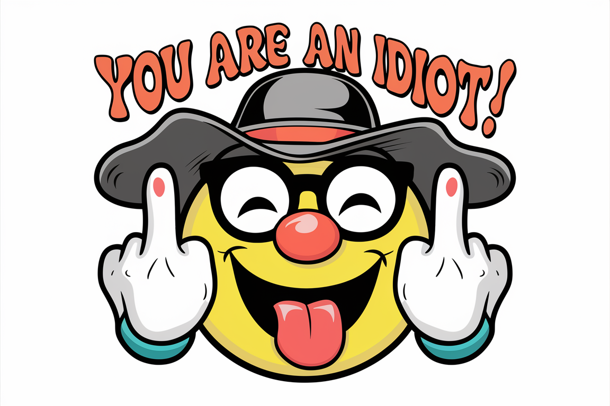

When This Timer Stops
You Will Know How To Keep An Idiot In Suspense!
Time Elapsed: 1 year, 5 months, 2 weeks, 5 days, 17 hours, 54 seconds
It's Coming!
Your browser does not support the audio element.